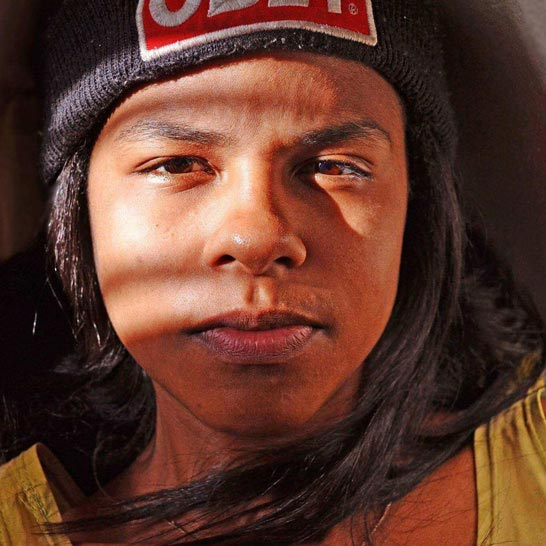

Funções / Edição
As informações de cada perfil são de responsabilidade das profissionais.
Você quer conhecer profissionais de quais estados?
Marcar/Desmarcar todos
CARREGANDO ...
 Amanda Lopes (SP)
Amanda Lopes (SP)
Amanda Lopes
34 anos | São Paulo (SP)
amanda_lopes0@hotmail.com
Formada em Administração de Empresas e professora de matemática. Atuei por 10 anos na área de Recursos Humanos. Graduanda do último ano em Comunicação Social com ênfase em Cinema. Persistente, bastante curiosa e proativa. Me sinto uma eterna aluna. Crio histórias há 20 anos, porém somente nos últimos 4 anos encarei o cinema e pude participar de mais de 25 curtas metragens. FIES, zero recursos, muita fé e alguns amigos, arrisquei nos meus projetos próprios. Empreendedora atualmente desenvolvo a plataforma Mulheres Audiovisual voltada para distribuição de filmes feitos por mulher e vagas direcionadas a esse público.
http://amandalopesfilmes.wixsite.com/portfolio
Outras atividades de Amanda Lopes
Assistência de Direção |
Captação de Recursos |
Coordenação de Projeto |
Direção |
Exibição |
Oficinas e cursos livres
|
Produção |
Programação e curadoria |
Roteiro
Amostra de vídeo
 Ana Carolina M Alho (SP)
Ana Carolina M Alho (SP)
Ana Carolina M Alho
31 anos | Botucatu (SP)
karolkaos@hotmail.com
Sou formada em cinema, atualmente cursando Pós – Graduação/MBA - Comunicação e Marketing em mídias digitais na Estácio previsão de conclusão em 10/2016. Possuo experiência com continuidade, assistência de direção, realização de roteiro, edição e manutenção do cronograma. Supervisão de pessoas, coordenação de atividades e recebimento e distribuição de materiais. Conhecimento em Designer Educacional, atuando com roteirização de vídeo aula. E tenho também experiência com a fotografia still, que umas das minha grandes paixões, com isso incluí a experiência com montagem de estúdio, edição de fotografia e videos. Minhas principais habilidades são: Integridade e coerência, flexibilidade.
Outras atividades de Ana Carolina M Alho
Assistência de Direção |
Continuidade |
Fotografia Still |
Produção
Amostra de vídeo
 Brenda Ligia Miguel (PE)
Brenda Ligia Miguel (PE)
Brenda Ligia Miguel
Recife (PE)
brenda.ligia@hotmail.com
Brenda Ligia, atriz de cinema, está em "Todas as Cores da Noite" (Pedro Severien), "As Melhores Coisas do Mundo" (Laís Bodanzky), "Sangue Azul" (Lírio Ferreira), "Bruna Surfistinha" (Marcus Baldini), e outros. Atuou nas séries de televisão "A Mulher do Prefeito" (Rede Globo), "Beleza S/A" (GNT), "9mm SP" (Fox), "Somos Um Só" (TV Cultura), diversos comerciais e videoclipes musicais. Também é apresentadora e cineasta. Estudou no Teatro Escola Macunaíma/SP; atuou em comédias, musicais, infantis e dramas. É formada em Comunicação Social pela Faculdade Oswaldo Cruz/SP, cursou Ciências Sociais na University of the West Indies (Trinidad & Tobago) e Francês em Vevey (Suíça).
http://brendaligia.blogspot.com.br
Outras atividades de Brenda Ligia Miguel
Atuação |
Direção |
Dublagem |
Roteiro
Amostra de vídeo
 Carol Rodrigues (SP)
Carol Rodrigues (SP)
Carol Rodrigues
32 anos | São Paulo (SP)
rsscarol@gmail.com
Formada em Ciências Sociais (Unicamp) e em Audiovisual (Usp). Paralelo a graduação, especializou-se como roteirista através de cursos livres em centros culturais. Em 2014, ganhei o edital Curta-Afirmativo, para realizar o curta “A boneca e o silêncio”, sobre a solidão de uma menina ao tomar a decisão de fazer um aborto. O filme participou de diversos festivais nacionais e internacionais, tendo vencido prêmios de Melhor Curta-Metragem em São Paulo, Belo Horizonte, Portugal e na Polônia, além de Prêmio de Melhor direção na Índia e de sido um dos finalistas como Melhor roteiro na Romênia. Foi roteirista e montadora da web série Zona SSP que está em finalização. Integra também a equipe da websérie Empoderadas enquanto roteirista, diretora e editora. Além disso, está na sala de roteiristas de uma série infantil que está sendo produzida pela Mixer-SP e tem lançamento previsto para outubro de 2017.
http://rsscarol.wixsite.com/portfolio
Outras atividades de Carol Rodrigues
Direção |
Oficinas e cursos livres |
Roteiro
Amostra de vídeo
 Catarina Apolonio (CE/PE)
Catarina Apolonio (CE/PE)
Catarina Apolonio
36 anos | Fortaleza (CE) e Recife (PE)
catapolonio@gmail.com
"Catarina Apolonio é recifense, formada em Som pela Escuela Internacional de Cine y TV de Cuba e em Comunicação Social RTV pela UFPE. Trabalha com pós-produção de som e imagem no Brasil e América Latina. Entre seus trabalhos mais conhecidos estão a edição de som para o filme ""O Som ao Redor"" (de Kléber Mendonça Filho) e edição de ambientes e efeitos para ""Prófugos"" (série do diretor chileno Pablo Larraín para a HBO Latina). Atualmente, também trabalha como técnica de gravação e operação de áudio no curso de Música da Universidade Federal do Ceará."
http://www.imdb.com/name/nm3569920/?ref_=fn_al_nm_1
Outras atividades de Catarina Apolonio
Mixagem e efeitos sonoros
Amostra de vídeo
 Daiane Rosário (BA)
Daiane Rosário (BA)
Daiane Rosário
25 anos | Salvador (BA)
ane_edicaocontato@hotmail.com
Montadora e Produtora há 6 anos, tem no currículo filmes, séries e programas de TV.
Outras atividades de Daiane Rosário
Gerência de Mídia |
Oficinas e cursos livres |
Produção |
Roteiro

Amostra de vídeo
 Danddara (RJ)
Danddara (RJ)
Danddara
47 anos | Rio de Janeiro (RJ)
dandarah@rocketmail.com
DANDDARA nasce em 1968; cresce na cena cultural do Samba carioca. É cineasta, performer, escritora e artista florestal premiada no Brasil e nos EUA. Sua arte ambientalista explora as Florestas Brasileiras em várias mídias. Em 1985, estreia no palco em musical de Bia Lessa. Em 1988, estreia no livro em antologias da Oficina Literária Ivan Proença; no mesmo ano funda o TEATRO FLORESTAL DO RIO DE JANEIRO. Na RIO-92, seu show Amor à Natureza com Henrique Cazes apresenta repertório de EcoSambas em evento cultural oficial. Muda pra Nova York em 1993. Em 2000 com Gurufim na Mangueira, estreia no cinema e se torna a primeira mulher negra cineasta do Brasil.
https://branded.me/danddara
Outras atividades de Danddara
Atuação |
Direção |
Roteiro
Amostra de vídeo
 Deka Carvalho (SP)
Deka Carvalho (SP)
Deka Carvalho
36 anos | São Paulo (SP)
kilometroprodutora@gmail.com
Sou Deka Carvalho, 36 anos, mãe, preta, favelada, produtora de videos e fotos. Sou responsável pelo audiovisual no estado da CUFA SP (Central Única das Favela de São Paulo) , sou proprietária da produtora Kilômetro na zona leste de São Paulo. Meu objetivo é mostrar o território favela no seu melhor contexto verdadeiro e nos colocarmos como protagonistas em todas as esferas.
https://www.facebook.com/kilometroprodutora/
Outras atividades de Deka Carvalho
Assistência de Direção |
Direção |
Direção de Arte |
Exibição |
Pesquisa e desenvolvimento |
Preparação de Elenco |
Produção |
Produção Executiva |
Roteiro
Amostra de vídeo
 Jessica Figueiró (SP)
Jessica Figueiró (SP)
Jessica Figueiró
23 anos | São Paulo (SP)
figueiroh@outlook.com
Olá, sou a Jessica, nascida e moradora da zona leste de São Paulo. Tenho técnico de design gráfico e cursos de computação gráfica. Ao escolher minha graduação, decidir unir minha paixão por design/ilustração com a de cinema, e escolhi Animação. Participei de algumas masterclass de animação e fiz um curso de Teoria e Estilos Cinematográficos com Pablo Villaça. Até o momento só trabalhei com design, direção de arte e ilustração. Meus trabalhos de audiovisual foram realizados até agora somente na faculdade. Atualmente estou finalizando um curso de Front End, no qual pretendo fazer mais uma ponte entre minhas paixões.
http://flickr.com/jessicafigueiro
Outras atividades de Jessica Figueiró
Animação |
Correção de cor |
Desenho de efeitos |
Direção de arte
Roteiro

Amostra de vídeo
 Karoline Maia (SP)
Karoline Maia (SP)
Karoline Maia
22 anos | São Paulo (SP)
karolinemaias@gmail.com
Sou formada em Rádio e TV, criadora e produtora das web-séries Nossa História Invisível e Cultura das Bordas. No audiovisual, atuo na direção de fotografia, edição e finalização.
http://maiakarol.tumblr.com/jardimcarolina
Outras atividades de Karoline Maia
Direção de fotografia |
Direção |
Produção
Amostra de vídeo
 Evanize Essi (BA)
Evanize Essi (BA)
Evanize Essi
22 anos | Cachoeira (BA)
evanizeuk@gmail.com
Graduanda em Cinema e Audiovisual pela UFRB, integrante do PET Cinema e do Laboratório de Análise e Criação em Imagem e Som (LACIS). Conselheira suplente do Conselho Municipal de Cultura de Santo Amaro/BA e diretora de projetos na Ápice Empresa Jr. de comunicação.
https://www.facebook.com/focoforcaeflash/
Outras atividades de Evanize Essi
Direção de fotografia |
Fotografia still |
Iluminação
Amostra de vídeo
 Naira Evine (AL)
Naira Evine (AL)
Naira Evine
23 anos | Maceió (AL)
naira.nai@gmail.com
"Pós Graduanda em Cinema e Linguagem Audiovisual, comunicóloga formada em Rádio e TV pela UESC. Convive com o mundo da arte desde pequena, com 13 anos aprendeu com seu pai a fotografar e ao longo dos anos foi se profissionalizando na área. Tem experiência profissional em produções audiovisuais, TV, fotografia e docência. É documentarista, diretora , diretora de fotografia, assistente de direção, roteirista, videomaker, editora de imagens e fotógrafa. Entende a grande importância de usar o audiovisual como ferramenta de combate às opressões. Se identifica como mulher negra e lésbica."
Outras atividades de Naira Evine
Direção |
Direção de fotografia |
Fotografia still |
Gerência de mídia
Amostra de vídeo
Jessica Figueiró (SP)
Jessica Figueiró
23 anos | São Paulo (SP)
figueiroh@outlook.com
Olá, sou a Jessica, nascida e moradora da zona leste de São Paulo. Tenho técnico de design gráfico e cursos de computação gráfica. Ao escolher minha graduação, decidir unir minha paixão por design/ilustração com a de cinema, e escolhi Animação. Participei de algumas masterclass de animação e fiz um curso de Teoria e Estilos Cinematográficos com Pablo Villaça. Até o momento só trabalhei com design, direção de arte e ilustração. Meus trabalhos de audiovisual foram realizados até agora somente na faculdade. Atualmente estou finalizando um curso de Front End, no qual pretendo fazer mais uma ponte entre minhas paixões.
http://flickr.com/jessicafigueiro
Outras atividades de Jessica Figueiró
Correção de cor |
Desenho de efeitos |
Direção de arte |
Edição |
Roteiro
Amostra de vídeo
 Keila Serruya (AM)
Keila Serruya (AM)
Keila Serruya
Manaus (AM)
keilaserruya@gmail.com
Formada em comunicação social, manauara, diretora audiovisual, artista visual e produtora. Diretora de obras audiovisuais “Nessa Cidade Todo Mundo Já Bebeu na Bica” e “ASSIM”, que circularam em festivais nacionais e internacionais e hoje estão sendo exibidos em canal fechado. Produtora e assistente de direção em projetos series, curtas, longas metragens, espetáculos e intervenções. Esteve a frente de projetos como MIVA - Mostra Internacional de Videodança da Amazônia, Até o Tucupi, Papo por frame, série de TV na Boca do Povo, serie de TV infantil Buzzz&Bizz, Noite Negra, Grito Rock Manaus dentre outros. Atualmente faz parte do grupo Picolé da Massa e é gestora do DaVárzea das Artes.
Outras atividades de Keila Serruya
Assistência de Direção |
Cineclubismo |
Continuidade |
Direção |
Exibição |
Fotografia Still |
Pesquisa e desenvolvimento |
Produção
Amostra de vídeo
 Lindiwe Aguiar (BA)
Lindiwe Aguiar (BA)
Lindiwe Aguiar
Salvador (BA)
ogunjavideos@ogunjavideos.com.br
Videomaker e Jornalista formada pelo Liceu de Artes e Ofícios da Bahia, foi educadora de vídeo na Fundação Cidade Mãe por 8 anos. Coordenou e ministrou oficinas de produção de mídias em diversas ONG’s e instituições de ensino na Bahia. Em 2015 Lindiwe Aguiar recebeu o Troféu Bronze do Prêmio Mulher de Negócios Sebrae.
http://www.ogunjavideos.com.br
Outras atividades de Lindiwe Aguiar
Coordenação de Projeto |
Correção de cor |
Desenho de efeitos |
Direção |
Oficinas e cursos livres |
Produção
Amostra de vídeo
 Lygia Pereira (SP)
Lygia Pereira (SP)
Lygia Pereira
24 anos | Campinas (SP)
lygiapsc@gmail.com
Graduanda do último semestre do curso de Midialogia na Unicamp, possui experiência em produções audiovisuais (captação de imagem, direção e produção), sobretudo em documentários. Atuou na direção, roteiro e montagem do curta "CEP 05300"; na assistência de produção do documentário "Jogo Truncado", produzido pelo Canal Futura; na co-edição do coletivo de mídia independente Ô, Xavante!. Possui experiência com produção cultural, tendo trabalhado na 7ª Bienal de dança do Sesc de Campinas.
https://lygiapereirablog.wordpress.com/
Outras atividades de Lygia Pereira
Assistência de direção |
Assistência de fotografia |
Continuidade |
Coordenação de projetos |
Direção |
Direção de fotografia |
Exibição |
Fotografia still |
Pesquisa e desenvolvimento |
Produção
Amostra de vídeo
 Mariani Lima (SP)
Mariani Lima (SP)
Mariani Lima
25 anos | Campinas (SP)
mariani_lima@hotmail.com
Formada em Cinema e Audiovisual na UFPel, atualmente trabalho como cinegrafista e editora freelancer em Campinas. Também sou Audiodescritora certificada.
http://www.vimeo.com/mariani
Outras atividades de Mariani Lima
Assistência de Direção |
Atuação |
Direção |
Direção de Fotografia |
Fotografia Still |
Oficinas e cursos livres |
Roteiro
Amostra de vídeo
 Michelle Andrews (AM)
Michelle Andrews (AM)
Michelle Andrews
32 anos | Manaus (AM)
michelleandrewsdifusao@gmail.com
Michelle Andrews, manauara, é produtora cultural, videomaker, fundadora do Coletivo Difusão (AM), autodidata atua em projetos socioculturais e ambientais desde 2004. Ministrou oficina e workshops no campo da produção audiovisual. Elabora e executa projetos de diversas linguagens desenvolvidos em território brasileiro, em especial na região Amazônica. Atualmente é coordenadora da MIVA: Mostra Internacional de Videodança, Semana do Audiovisual em Manaus e Centro Popular do Audiovisual
https://www.facebook.com/michelleandrewsnorte
Outras atividades de Michelle Andrews
Captação de Recursos |
Cineclubismo |
Oficinas e cursos livres |
Roteiro
Amostra de vídeo
 Natalie Matos (MG)
Natalie Matos (MG)
Natalie Matos
21 anos | Belo Horizonte (MG)
natalie.m.moura@gmail.com
A única certeza que mora em mim é a de que a cada passo aprendo algo novo e construo minha identidade. Como uma árvore que cresce regada ao amor e às dificuldades, dá bons frutos e flores, mas também amadurece antes da hora e às vezes até mesmo cai, mas, sempre lembra que tudo que se vive fortalece suas raízes. E sempre quando eu precisar vou ao meu interior e discuto comigo, para entender esse meu eu que às vezes recusa falar e prefere apenas sentir. Gradua em Cinema e Audiovisual e Técnico em Artes Visuais, hoje tenho projetos de visibilidade ao protagonismo da mulher preta e a juventude periférica.
http://nataliem-moura.wixsite.com/nataliematos
Outras atividades de Natalie Matos
Assistência de Direção |
Captação de Recursos |
Captação de Som |
Cenografia |
Continuidade |
Correção de cor |
Direção |
Direção de Arte |
Direção de Fotografia |
Edição |
Fotografia Still |
Iluminação |
Mixagem e efeitos sonoros |
Pesquisa e desenvolvimento |
Preparação de Elenco |
Produção |
Roteiro
Amostra de vídeo
 Quézia Lopes (RJ)
Quézia Lopes (RJ)
Quézia Lopes
29 anos | Niterói (RJ)
queziamaria@yahoo.com.br
Bacharela em Cinema e Audiovisual pela Universidade Federal Fluminense (UFF), com experiência como diretora, roteirista, produtora, editora e assistente de direção e de produção, no cinema e audiovisual independentes.
https://www.facebook.com/queziamarialopes
Outras atividades de Quézia Lopes
Assistência de Direção |
Cineclubismo |
Coordenação de Projeto |
Crítica |
Direção |
Pesquisa e desenvolvimento |
Produção |
Programação e curadoria |
Roteiro
Amostra de vídeo
 Sassá Souza (SC)
Sassá Souza (SC)
Sassá Souza
Florianópolis (SC)
sa.souzasss@gmail.com
Ativista Cineclubista Negra, fez parte do Cineclube Mate com Angu de onde saiu para fundar com outras feminista da Baixada Fluminense do RJ o Facção Feminista Cineclube. Antes disso lutou pela Pedagogia Libertária e implementação da Lei 10639/03 na cidade de Pelotas, no sul do RS junto ao Coletivo Negada, onde trabalhava com Educação Escolar Quilombola e Desenvolvimento Étnico Racial. Atualmente mora em Florianópolis -SC trabalhando na Secretaria de Ações Afirmativas e Diversidade da Universidade Federal de Santa Catarina e ativa o CineClube Ekô.
Outras atividades de Sassá Souza
Cineclubismo |
Gerência de Mídia |
Produção |
Programação e curadoria |
Roteiro
Amostra de vídeo
Victória Duarte (SP)
Victória Duarte
19 anos | São Paulo (SP)
vitoriafirmiano2009@hotmail.com
Fiz um curso técnico de multimídia de 1 ano e meio, no meu TCC fiquei responsável pela parte de fotografia, gravação dos vídeos e edição de ambos. Realizei também um curso básico de cinema (É NOIS NA FITA) fiquei como assistente de fotografia do curta que realizamos. E atualmente fotografo por aí.
Outras atividades de Victória Duarte
Assistência de fotografia |
Captação de som |
Iluminação
Amostra de vídeo
 Victória Moreira (SP)
Victória Moreira (SP)
Victória Moreira
21 anos | Osasco (SP)
victoria.mslopes@gmail.com
Victória Moreira, 21 anos, estudante de rádio, TV e internet da faculdade Cásper Líbero. Experiência com os softwares: Illustrator, Photoshop, Premiere, After Effects e Audition.